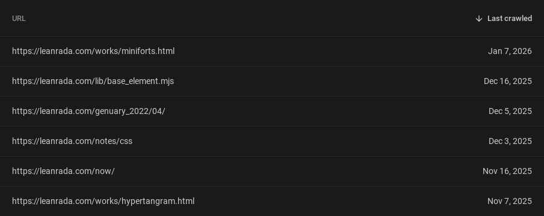

I wrote automated tests to keep track of my site’s URLs and prevent links from breaking.
When I reorganised my site, I changed a lot of URLs and broke some inbound links. Now that more and more sites have started linking to my site, I don’t want to inadvertently break links again.
Cool URIs don't changeTim Berners-Lee (1998)
This post is NOT about how to implement ‘cool URLs’. Too many ways to do that depending on the site’s setup and the site’s philosophy even. Rather, this post is about ensuring cool URLs — a contract to guarantee that published URLs continue to work. It doesn’t matter how your specific site implementation fulfil that contract.
There already exists a contract: a social contract when you publish a webpage. Other people can link to your URL on their sites, and you can link to other people’s content on your site in return. And we expect these inbound and outbound links to work, otherwise the World Wide Web would be pretty boring to browse.
A stronger contract is to treat URLs as a public API. Once published, it becomes an interface other people depend on. Changing it is a breaking change, just like changing a function signature.
If it’s an API, can we perhaps run automated tests against it?
Testing URLs automatically
Your website could be a static site, a Java Spring Boot thing, or a PHP server, it doesn’t matter as long as it serves HTML over HTTP.
Essentially, the test is to fetch each URL off a list of known URLs and check expected responses.
test.each([
['/', 200],
['/about', 200],
['/about/', 200],
['/signin', 301, '/login'],
['/news', 302, '/en-US/news'],
['/api/ping', 204],
['/dashboard', 403],
['/secret', 404],
])('%s %i', async (path, status, location) => {
const res = await fetch(base + path, { redirect: 'manual' });
expect(res.status).toBe(status);
if (location) expect(res.headers.get('location')).toBe(location);
});
But manually writing a test case for every URL would be a pain. Updating tests is also tedious. This is where snapshot testing comes in.
Snapshot testing
The easiest way to do this is via snapshot testing (or golden tests).
Snapshot testing takes a record of the system’s behaviour and saves that as a baseline or ‘golden file’ against which future versions of the system are compared.
In my case, the snapshot is the set of URLs my site serves. A ‘snap’ involves a crawler gathering all the URLs and writing them to a text file. Unlike snapshot testing approaches that inline values in the test code, I prefer to keep this snapshot as a separate artifact so changes can be reviewed more easily.
/
/about/
/notes/
/wares/
/wares/pong-ai/
...and so on...
Then when I make refactors or any code change, I can run the crawler again and compare the snapshots. Any difference to the baseline is treated as a breaking change unless explicitly approved.
The interesting part is using git to turn that comparison into an enforced check.
Snapshot testing with git
With git, I don’t actually need to ‘write tests’ or use a testing framework.
git is the testing framework.
- To run tests, run the crawler and check the exit code of
git diff --quiet -- path/to/snapshot.
- To debug failures,
git diff can show me the expected and actual values, just like a testing framework.
- To approve changes to the baseline, I commit the snapshot file.
Preventing accidental changes is the real goal, so a pre-commit hook is set up to abort commits when the snapshot contains an unapproved change.
# pre-commit
./tests/my-crawler >git-hooks/pre-commit.log 2>&1
if ! git diff --quiet -- tests/url-snapshot; then
echo "URL snapshot file changed. Commit aborted."
exit 1
fi
With this, any change to URLs must be intentional, like with public APIs. It’s like URLs as versioned public API.
If I wanted to restructure my site again, I now have a way to check how existing URLs would have been taken care of (e.g. redirected).
As a bonus, this also helps prevent me from accidentally publishing draft posts (which I’ve done a few times)!
Other notes
-
It’s like Page Indexing tracking in Google Search Console.

This used to tell me when a URL suddenly goes 404 or something.
-
Status code can be included in the snapshot so it can explicitly keep track of unreachable URLs (which by definition, won’t be crawled).
200 /
200 /about/
200 /notes/
200 /wares/
404 /portfolio/
...and so on...
- The crawler can even use the snapshot itself as starting points for the crawl, instead of starting from just the root
/. This way, the snapshot does not forget URLs. Once published, a URL is either a 200 or a 404. It’s like bookmarking every page on your site.
- This could be extended to track other page properties as well, such as the canonical URL. Anything that is often overlooked or auto-generated that you might want to review before deploying.
Applicability to different kinds of websites (in order)
For static plain HTML sites like mine, it’s probably not going to be very useful. URLs change only when you move HTML files around. No surprises here. But since I tend to forget about things and refactor stuff for the fun of it, this will still be a good thing as a self-imposed rule for future me (a contract with myself?).
I have broken the CSS on this site countless times due to CSS refactors. I’ve been meaning to do visual snapshot testing to keep refactors at bay but visual snapshot testing is noisy, not to mention slow. Definitely not a pre-commit thing.
On the other hand, for sites made with static site builders, explicitly reviewing changes to site structure could be better than relying on assumptions about the internal route-generation logic of the site generator. This is if you’re not already checking in the generated files in source control, at which point the URL snapshot is kinda redundant.
For a complex site with servers, rewrite rules, frameworks, or proxies, a version of this snapshotting routine could be set up to help prevent unwanted changes, but it couldn’t be git-based anymore if you have database-driven or otherwise dynamic URLs.
Sites based on client-side routing won’t work at all, unless the crawler is more advanced and can execute JS (hard).
Closing notes
Treats URLs as versioned, reviewable artifacts. Once published, they stop being an implementation detail and start being something you should consciously maintain.
URL mappings are often treated as emergent properties of a web server (nested routes? wildcard routes?) or a site generator’s build system. An explicit exhaustive URL listing makes them more tangible.
I wrote a lot about testing and APIs and philosophy but in the end it’s basically a crawler sitemap + git. :D